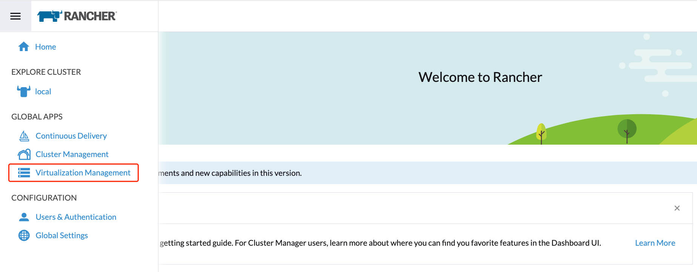
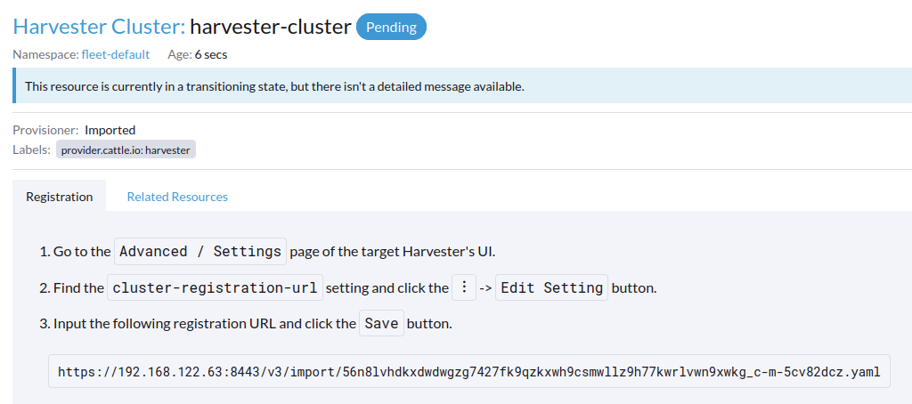
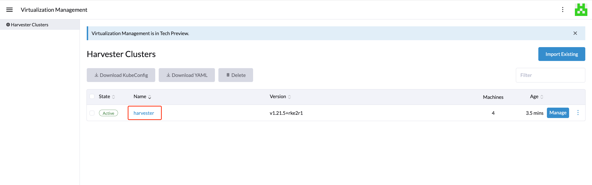
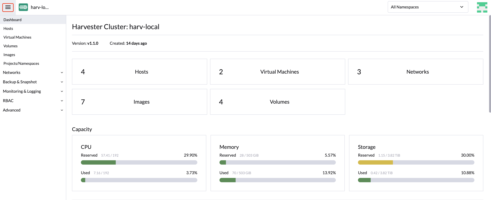
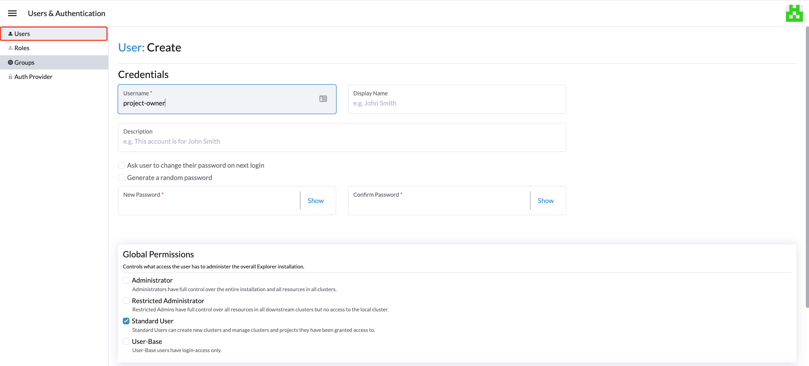
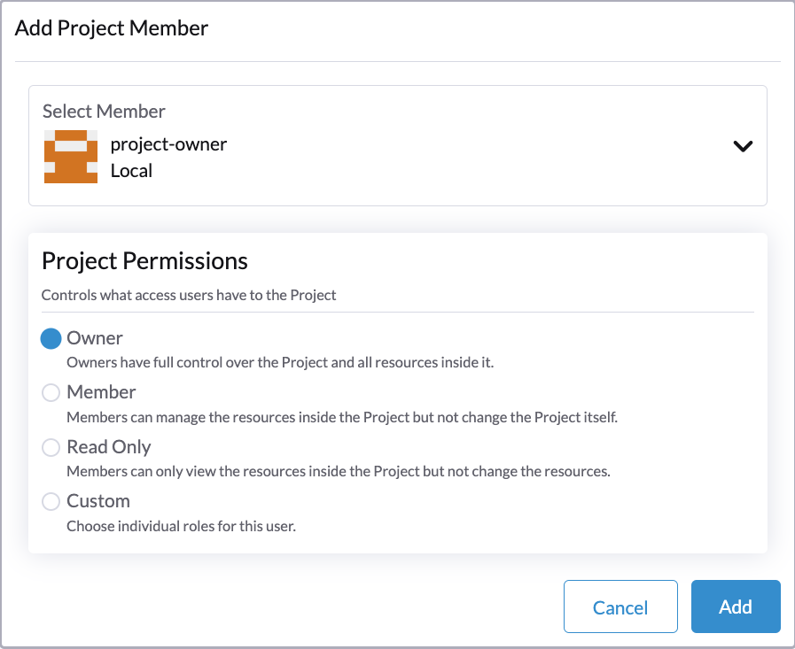
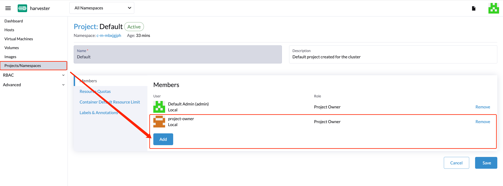

Virtualization Management
With Rancher’s virtualization management capabilities, you can import and manage multiple Harvester clusters. It provides a solution that unifies virtualization and container management from a single pane of glass.
Additionally, Harvester leverages Rancher’s existing capabilities, such as authentication and RBAC control, to provide full multi-tenancy support.
Please refer to the Harvester & Rancher Support Matrix to find a desired Rancher version. You can use one of the following guides to deploy and provision Rancher and a Kubernetes cluster with the provider of your choice:
-
AWS (uses Terraform)
-
AWS Marketplace (uses Amazon EKS)
-
Azure (uses Terraform)
-
DigitalOcean (uses Terraform)
-
GCP (uses Terraform)
-
Hetzner Cloud (uses Terraform)
-
Outscale (uses Terraform)
Importing Harvester cluster
-
UI
-
API
-
Check and prepare the container image.
To facilitate the importing task, a new pod named
cattle-cluster-agent-***will be created on the Harvester cluster. The container image used for this pod depends on the version of your Rancher server (for example, the imagerancher/rancher-agent:v2.7.9is used if you are running Rancher v2.7.9). Moreover, this dynamic image is not packed into the Harvester ISO and is instead pulled from the repository during importing.If your Harvester cluster is not directly accessible from the internet, perform one of the following actions:
-
Configure a private registry for the cluster and add the image. Harvester will automatically pull the image from this registry.
-
If you configured an HTTP proxy for accessing external services, verify that it is working as expected. The DNS servers that you specified in the Harvester configuration should be able to resolve the domain name
docker.io. -
Download the image using the command
docker pull rancher/rancher-agent:v2.7.9 && docker save -o rancher-agent.tar rancher/rancher-agent:v2.7.9. Next, create a copy of the downloaded image in each cluster node, and then import the image to containerd using the commandsudo -i ctr --namespace k8s.io image import rancher-agent.tar. Finally, runsudo -i crictl image ls | grep "rancher-agent"on each node to ensure that the image is ready.
-
-
Once the Rancher server is up and running, log in and click the hamburger menu and choose the Virtualization Management tab. Select Import Existing to import the downstream Harvester cluster into the Rancher server. 
-
Specify the
Cluster Nameand click Create. You will then see the registration guide; please open the dashboard of the target Harvester cluster and follow the guide accordingly.  -
Once the agent node is ready, you should be able to view and access the imported Harvester cluster from the Rancher server and manage your VMs accordingly. 
Whenever the agent node becomes stuck, run the command
kubectl get pod cattle-cluster-agent-*** -n cattle-system -oyamlon the Harvester cluster. If the following message is displayed, check the information in step 1, kill this pod and then a new pod will be created automatically to restart the importing process.... state: waiting: message: Back-off pulling image "rancher/rancher-agent:v2.7.9" reason: ImagePullBackOff ... -
From the Harvester UI, you can click the hamburger menu to navigate back to the Rancher multi-cluster management page.

-
In the Rancher Kubernetes cluster, create a new
Clusterresource.Example:
apiVersion: provisioning.cattle.io/v1 kind: Cluster metadata: name: harvester-cluster-name namespace: fleet-default labels: provider.cattle.io: harvester annotations: field.cattle.io/description: Human readable cluster description spec: agentEnvVars: [] -
Once the status of the
Clusterresource is updated, obtain the cluster ID (format:c-m-foobar) from the.status.clusterNameproperty. -
Create a
ClusterRegistrationTokenusing the cluster ID in the namespace with the same name as the cluster ID. You must specify the cluster ID in the token’s.spec.clusterNamefield.Example:
apiVersion: management.cattle.io/v3 kind: ClusterRegistrationToken metadata: name: default-token namespace: c-m-foobar spec: clusterName: c-m-foobar -
Once the status of the
ClusterRegistrationTokenis updated, obtain the value of the token’s.status.manifestUrlproperty. -
In the Harvester cluster, patch the setting
cluster-registration-urland specify the URL obtained from the cluster registration token’s.status.manifestUrlproperty in thevaluefield.Example:
apiVersion: harvesterhci.io/v1beta1 kind: Setting metadata: name: cluster-registration-url value: https://rancher.example.com/v3/import/abcdefghijkl1234567890-c-m-foobar.yaml
Multi-Tenancy
In Harvester, we have leveraged the existing Rancher RBAC authorization such that users can view and manage a set of resources based on their cluster and project role permissions.
Within Rancher, each person authenticates as a user, which is a login that grants a user access to Rancher. As mentioned in Authentication, users can either be local or external.
Once the user logs into Rancher, their authorization, also known as access rights, is determined by global permissions and cluster and project roles.
-
-
Define user authorization outside the scope of any particular cluster.
-
-
-
Define user authorization inside the specific cluster or project where users are assigned the role.
-
Both global permissions and cluster and project roles are implemented on top of Kubernetes RBAC. Therefore, enforcement of permissions and roles is performed by Kubernetes.
-
A cluster owner has full control over the cluster and all resources inside it, e.g., hosts, VMs, volumes, images, networks, backups, and settings.
-
A project user can be assigned to a specific project with permission to manage the resources inside the project.
Multi-Tenancy Example
The following example provides a good explanation of how the multi-tenant feature works:
-
First, add new users via the Rancher
Users & Authenticationpage. Then clickCreateto add two new separated users, such asproject-ownerandproject-readonlyrespectively.-
A
project-owneris a user with permission to manage a list of resources of a particular project, e.g., the default project. -
A
project-readonlyis a user with read-only permission of a particular project, e.g., the default project. 
-
-
Click one of the imported Harvester clusters after navigating to the Harvester UI.
-
Click the
Projects/Namespacestab. -
Select a project such as
defaultand click theEdit Configmenu to assign the users to this project with appropriate permissions. For example, theproject-owneruser will be assigned the project owner role. 
-
-
Continue to add the
project-readonlyuser to the same project with read-only permissions and click Save.  -
Open an incognito browser and log in as
project-owner. -
After logging in as the
project-owneruser, click the Virtualization Management tab. There you should be able to view the cluster and project to which you have been assigned. -
Click the Images tab to view a list of images previously uploaded to the
harvester-publicnamespace. You can also upload your own image if needed. -
Create a VM with one of the images that you have uploaded.
-
Log in with another user, e.g.,
project-readonly, and this user will only have the read permission of the assigned project.
|
The |
Delete Imported Harvester Cluster
Users can delete the imported Harvester cluster from the Rancher UI via menu:Virtualization Management[Harvester Clusters]. Select the cluster you want to remove and click the Delete button to delete the imported Harvester cluster.
You will also need to reset the cluster-registration-url setting on the associated Harvester cluster to clean up the Rancher cluster agent.
|
Please do not run the |